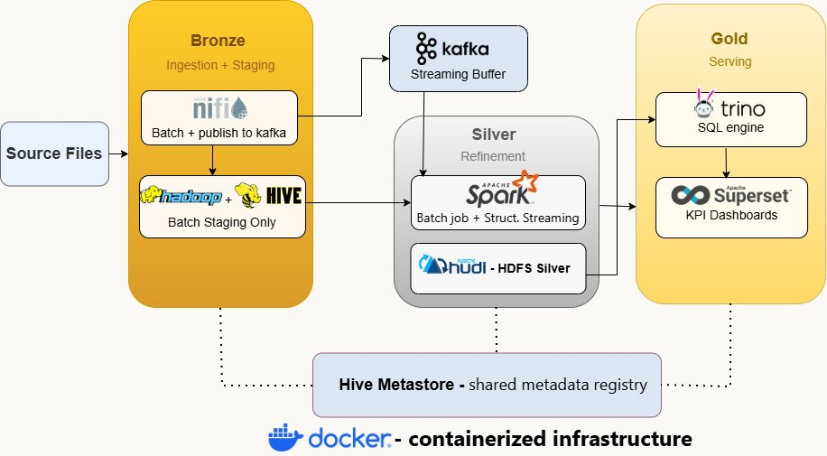
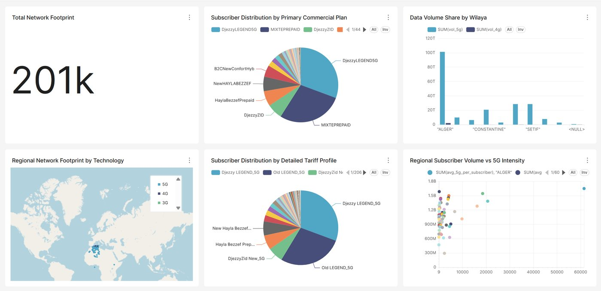
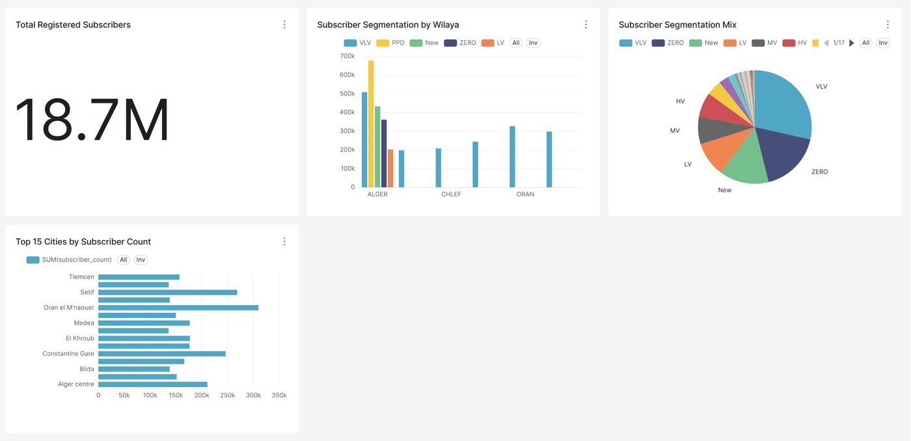

Data lakehouse for Djezzy
With 5G, Djezzy’s data warehouse could no longer keep up, and reports took more than 24 hours to compile. I designed a lakehouse on the medallion pattern that delivers fresh KPIs in near real time, with a batch pipeline and a streaming pipeline.
- Bronze. NiFi orchestrates ingestion: batch files land on HDFS as received, and streaming events are published to Kafka topics.
- Silver. A Spark (Scala) batch job cleans and enriches CDR data into daily KPI tables. Spark Structured Streaming consumes Kafka and upserts subscriber profiles. Both write Apache Hudi tables on HDFS.
- Gold. Trino queries the Hudi tables through the Hive Metastore, and Superset serves the KPI dashboards.
The batch sources include files of up to 19 GB and about 28 million rows, and the streaming pipeline loads about 19 million subscriber records. The whole stack runs in Docker Compose on a single machine. I validated both pipelines end to end, from ingestion to committed Hudi tables and dashboards.
Kafka · Spark · Hadoop (HDFS) · NiFi · Hudi · Hive · Trino · Superset · Docker


